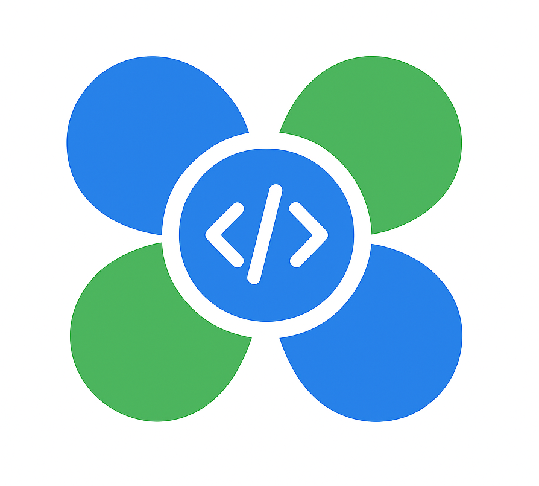

Nome do Docente
Docente • Coordenação
Doutor(a) em Computação. Atua em Engenharia de Software, Arquitetura, Métodos Ágeis e Inovação.
Jardim de Software do IFPE — Campus Belo Jardim. Unimos ensino, extensão, pesquisa e inovação para conceber, projetar e entregar soluções digitais de impacto acadêmico e social.

Docentes e discentes atuando na concepção, desenvolvimento e transferência de tecnologia.

Docente • Coordenação
Doutor(a) em Computação. Atua em Engenharia de Software, Arquitetura, Métodos Ágeis e Inovação.
Docente • UX/UI & Pesquisa
Mestre/Doutor(a) em IHC e UX. Pesquisa aplicações educacionais e experiência de usuário.
Discente • Desenvolvimento Full-Stack
Atua no desenvolvimento de APIs, front-end responsivo e automação de testes.
Discente • QA & DevOps
Foco em qualidade, integração contínua e entrega contínua de software educacional.
Destaques de soluções desenvolvidas, projetos de extensão e inovação.
Ambiente web para cursos, atividades e acompanhamento de aprendizagem.
RepositórioColeta, análise e visualização de dados para apoiar decisões pedagógicas.
RepositórioAplicativo para engajamento em trilhas de aprendizagem com desafios.
RepositórioReconhecimentos, menções na mídia e comunicados oficiais.
Em breve
Em breve
Artigos, relatos técnicos e registros de software.